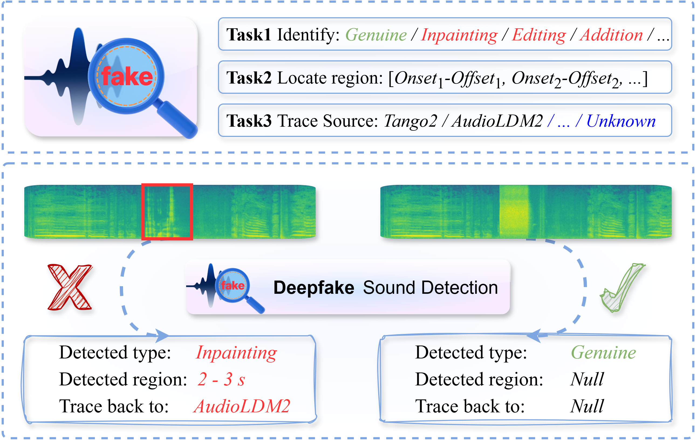
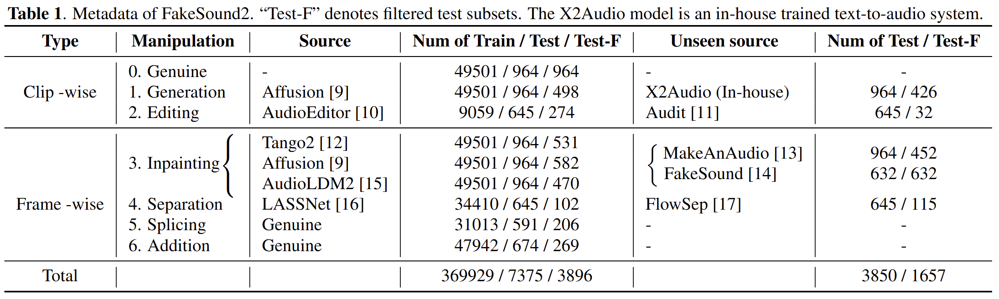
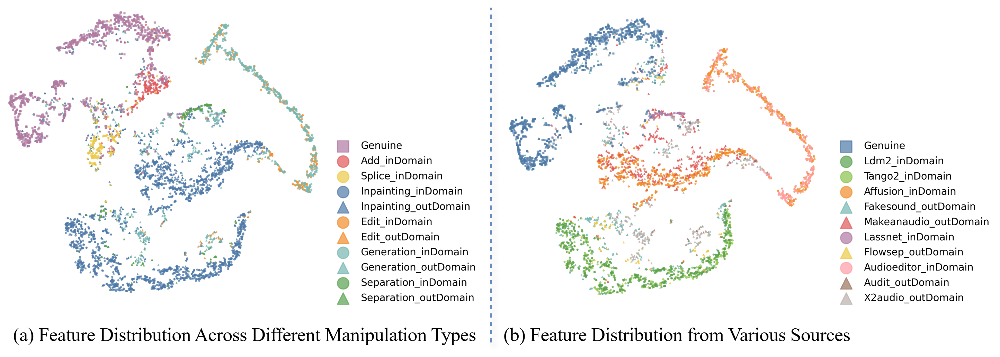

FakeSound2
A Benchmark for Explainable and Generalizable Deepfake Sound Detection
| Paper
| Evaluation Code
| Data
|
Zeyu Xie 1,
Xuenan Xu 2,
Yongkang Yin 1,
Chenxing Li 3,
Mengyue Wu 2,
Yuexian Zou 1
1 ADSP Lab, Peking University
2 X-LANCE Lab, Shanghai Jiao Tong University
3 Tencent AI Lab
zeyuxie25@stu.pku.edu.cn
Abstract.
The rapid development of generative audio raises ethical and security concerns stemming from forged data, making deepfake sound detection an important safeguard against the malicious use of such technologies.
Although prior studies have explored this task, existing methods largely focus on binary classification and fall short in explaining how manipulations occur, tracing where the sources originated, or generalizing to unseen sources—thereby limiting the explainability and reliability of detection.
To address these limitations, we present FakeSound2, a benchmark designed to advance deepfake sound detection beyond binary accuracy.
FakeSound2 evaluates models across three dimensions: localization, traceability, and generalization, covering 6 manipulation types and 12 diverse sources.
Experimental results show that although current systems achieve high classification accuracy, they struggle to recognize forged pattern distributions and provide reliable explanations.
By highlighting these gaps, FakeSound2 establishes a comprehensive benchmark that reveals key challenges and aims to foster robust, explainable, and generalizable approaches for trustworthy audio authentication.
Navigation Bar.
Deepfake Samples.
FakeSound2 Construction
1. Task Description
The explainable deepfake detection need identify the manipulation method (how), localize the temporal positions of forgery (when), and trace the accountable sources (where).

2. Manipulation Pipeline
(I) A Text-to-Audio grounding model temporally localizes sound events and masks segments;
(II) Based on the task type, the LLM generates the target captions and insert event descriptions;
(III) Depending on the task requirements, relevant models or scripts are invoked to generate synthetic audio segments; frame-wise forgeries are seamlessly spliced according to the masked regions.

3. Data Statistics
Statistics
Constructed through an automated pipeline leveraging the AudioCaps dataset, it encompasses
6 distinct manipulation types derived from
12 audio sources (
11 synthetic and
1 genuine).
The dataset ultimately comprises a training set of
369,929 samples and a test set of
5,553 samples.
Researchers can flexibly partition the test subset to evaluate generalization, provided that out-of-domain (OOD) sources remain completely unseen during training.

Analysis
4. Feature Visualization
Overall, the current model exhibits reliable separability between authentic and manipulated audio, enabling effective binary classification.
However, certain forged audio categories demonstrate substantial overlap in the feature space, which diminishes explainability for source attribution.

5. Limitations and Challenges of Current Models
Although current models perform well in binary classification, they exhibit the following shortcomings:
-
Limitation⇒ Difficulty in distinguishing between deepfake audio generated by similar manipulation frameworks.
Challenge⇒ enable models to capture fine-grained distributional discrepancies.
-
Limitation⇒ Limited generalization capability.
Challenge⇒ enable models to characterize the true data distribution of authentic audio rather than memorizing artificial forgery patterns.